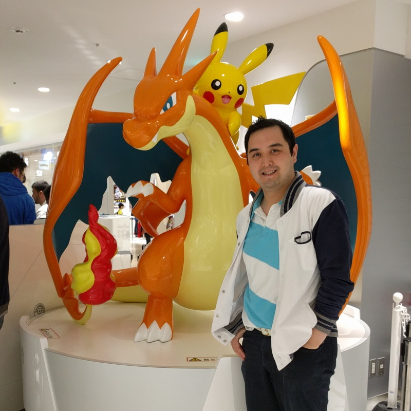
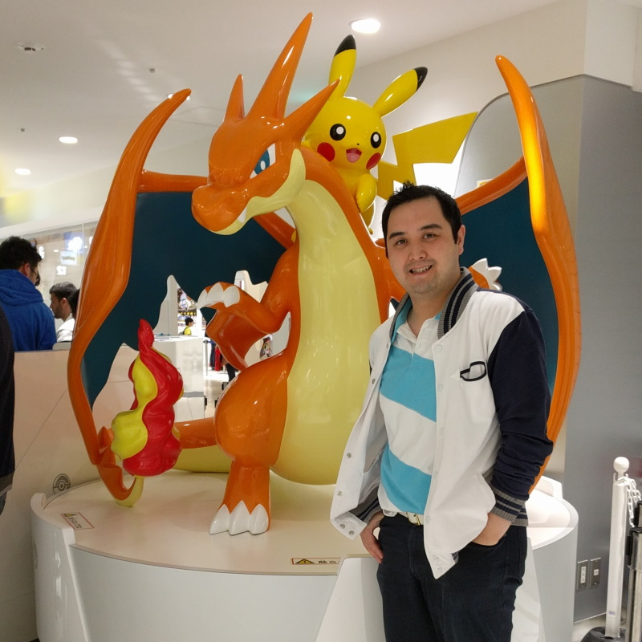

About Me
Hi, I'm Karl. I have a background in Marketing and Advertising, as well as Customer Service and Community Management. I'm now taking on a new challenge: diving into web development, cloud, and cyber-security!
My interests are varied, to the point of being ecclectic. You can find me nose deep reading up on anything: from video games to deep sea exploration; Formula 1 to tiny homes; mechanical keyboards to Roman antiquity - and this barely scratches the surface!
While I do research into too many things, my main passions right now include:
- Cosplay (mostly production, but I will put on an outfit with the fam)
- Origami
- Custom mechanical keyboards
- Coffee
- Video games
- 3D printing
I'm generally soft-spoken and introverted in real life, but put me on digital platform, and I can get fairly chatty. If you do see me out and about though, you can talk to me - I'm shy, but not completely anti-social (I think).
Life is currently a balancing act between study and parenthood, but I'm keen to get back into the office life once I've acquired some more skills. Keep an eye out for my CV in your inbox soon!